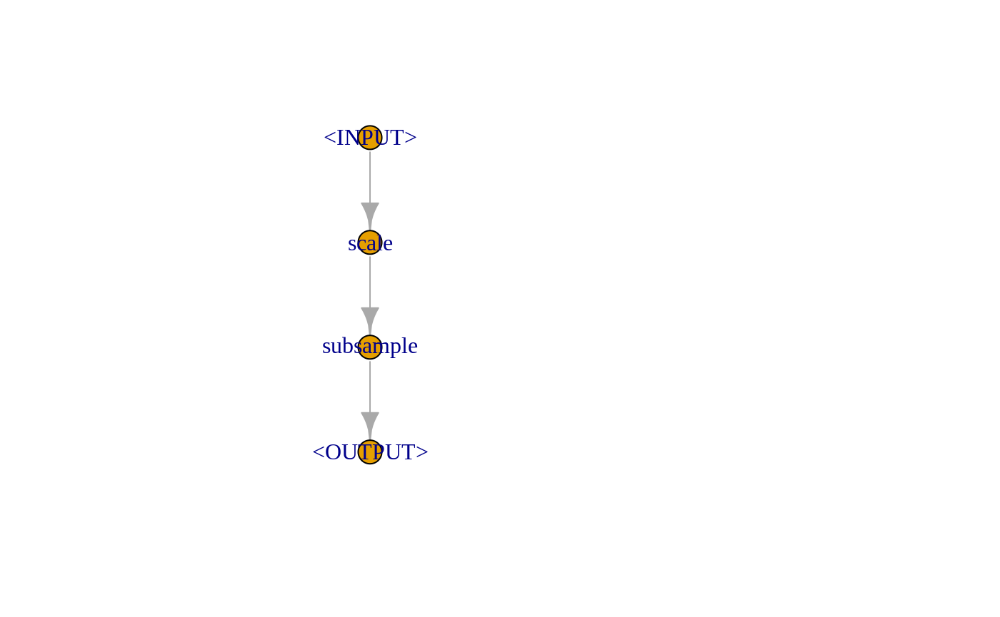
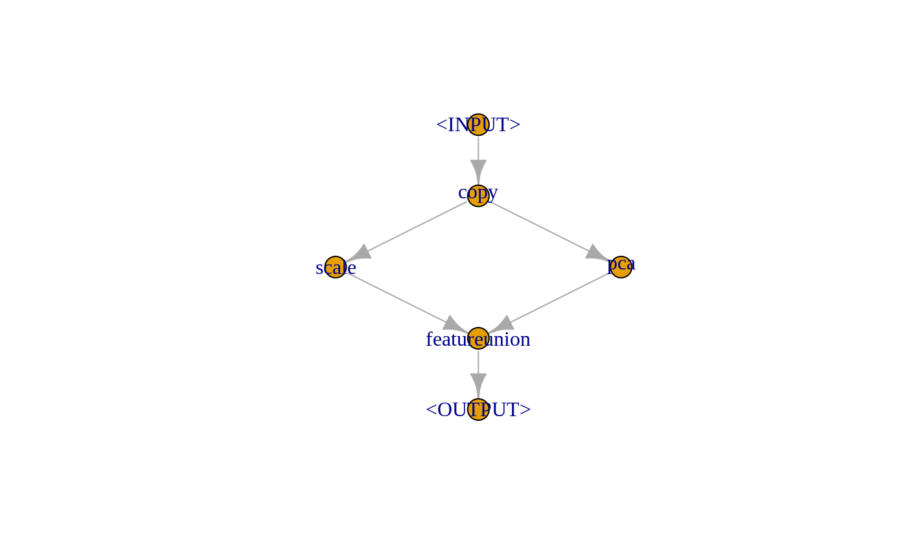

This vignette is an introduction to mlr3pipelines, the dataflow programming toolkit for machine learning in R using mlr3. It will quickly mention the basic concepts and then go through a few examples that both show the simplicity as well as the power and versaitility of using mlr3pipelines.
What’s the Point
Machine learning toolkits often try to abstract the processes happening inside machine learning algorithms, making it easy for the user to switch out one algorithm for another without having to worry about what is happening inside them, what kind of data they are able to operate with etc. The benefit of using mlr3, for example, is that one can create a Learner, a Task, a Resampling etc. and use them for typical machine learning operations. It is trivial to exchange individual components and therefore use, for example, a different Learner in the same experiment for comparison.
task = TaskClassif$new("iris", as_data_backend(iris), "Species")
lrn = mlr_learners$get("classif.rpart")
rsmp = mlr_resamplings$get("holdout")
resample(task, lrn, rsmp)
#> INFO [mlr3] Running learner 'classif.rpart' on task 'iris' (iteration 1/1)'
#> <ResampleResult> of learner 'iris' on task 'classif.rpart' with 1 iterations
#> Measure Min. 1st Qu. Median Mean 3rd Qu. Max. Sd
#> classif.ce 0.06 0.06 0.06 0.06 0.06 0.06 NAHowever, this modularity breaks down as soon as the learning algorithm encompasses more than just model fitting, but instead also things like data preprocessing or meta models. mlr3pipelines takes modularity one step further: it makes it possible to build individual steps within a “Learner” out of building blocks called PipeOps.
PipeOp: Pipeline Operators
The most basic unit of functionality within mlr3pipelines is the PipeOp, short for “pipeline operator”, which represents a transformative operation on input (for example a training dataset) leading to output. It can therefore be seen as a generalised notion of a function, with a certain twist: PipeOps behave differently during a “training phase” and a “prediction phase”. The training phase will typically generate a certain model of the data that is saved as internal state. The prediction phase will then operate on the input data depending on the trained model.
An example of this behaviour is the principal component analysis operation (“PipeOpPCA”): During training, it will transform incoming data by rotating it in a way that leads to uncorrelated features ordered by their contribution to total variance. It will also save the rotation matrix to be used during for new data. This makes it possible to perform “prediction” with single rows of new data, where this row’s scores on each of the principal components of the training data is computed.
po = mlr_pipeops$get("pca")
po$train(list(task))[[1]]$data()
#> Species PC1 PC2 PC3 PC4
#> 1: setosa -2.684126 0.31939725 -0.02791483 -0.002262437
#> 2: setosa -2.714142 -0.17700123 -0.21046427 -0.099026550
#> 3: setosa -2.888991 -0.14494943 0.01790026 -0.019968390
#> 4: setosa -2.745343 -0.31829898 0.03155937 0.075575817
#> 5: setosa -2.728717 0.32675451 0.09007924 0.061258593
#> ---
#> 146: virginica 1.944110 0.18753230 0.17782509 -0.426195940
#> 147: virginica 1.527167 -0.37531698 -0.12189817 -0.254367442
#> 148: virginica 1.764346 0.07885885 0.13048163 -0.137001274
#> 149: virginica 1.900942 0.11662796 0.72325156 -0.044595305
#> 150: virginica 1.390189 -0.28266094 0.36290965 0.155038628single_line_task = task$clone()$filter(1)
po$predict(list(single_line_task))[[1]]$data()
#> Species PC1 PC2 PC3 PC4
#> 1: setosa -2.684126 0.3193972 -0.02791483 -0.002262437po$state
#> Standard deviations (1, .., p=4):
#> [1] 2.0562689 0.4926162 0.2796596 0.1543862
#>
#> Rotation (n x k) = (4 x 4):
#> PC1 PC2 PC3 PC4
#> Petal.Length 0.85667061 -0.17337266 0.07623608 0.4798390
#> Petal.Width 0.35828920 -0.07548102 0.54583143 -0.7536574
#> Sepal.Length 0.36138659 0.65658877 -0.58202985 -0.3154872
#> Sepal.Width -0.08452251 0.73016143 0.59791083 0.3197231This shows the most important primitives integrated by a PipeOp:
-
$train(), taking a list of input arguments, turning them into a list of outputs, meanwhile saving a state in$state -
$predict(), taking a list of input arguments, turning them into a list of outputs, making use of the saved$state -
$state, the “model” trained with$train()and utilised during$predict().
Why the $state
It is important to take a moment and notice the importance of a $state variable and the $train() / $predict() dichotomy in a PipeOp. There are many preprocessing methods, for example scaling of parameters or imputation, that could in theory just be applied to training data and prediction / validation data separately, or they could be applied to a task before resampling is performed. This would, however, be fallacious:
- The preprocessing on prediction data should not depend on the prediction dataset. A prediction on a single instance of new data should give the same result as prediction performed on a whole dataset.
- Performing preprocessing on a task before doing resampling leaks information about the test set into the training set. Resampling should evaluate the generalisation performance of the entire machine learning method, therefore the behaviour of this entire method must only depend on the content of the training split during resampling.
Where to Get PipeOps
Each PipeOp is an instance of an “R6” class, many of which are provided by the mlr3pipelines package itself. They can be constructed explicitly (“PipeOpPCA$new()”) or retrieved from the mlr_pipelines collection: mlr_pipeops$get("pca"). The entire list of available PipeOps, and some meta-information, can be retrieved using as.data.table():
as.data.table(mlr_pipeops)[, c("id", "input.num", "output.num")]
#> id input.num output.num
#> 1: backuplearner 2 1
#> 2: balancesample 1 1
#> 3: branch 1 NA
#> 4: chunk 1 NA
#> 5: copy 1 NA
#> 6: encode 1 1
#> 7: featureunion NA 1
#> 8: filter 1 1
#> 9: impute 1 1
#> 10: learner 1 1
#> 11: learner_cv 1 1
#> 12: majorityvote NA 1
#> 13: modelavg NA 1
#> 14: nloptmajorityvote NA 1
#> 15: nloptmodelavg NA 1
#> 16: null 1 1
#> 17: pca 1 1
#> 18: scale 1 1
#> 19: subsample 1 1
#> 20: unbranch NA 1PipeOp Channels
Input Channels
Just like functions, PipeOps can take multiple inputs. These multiple inputs are always given as elements in the input list. For example, there is a PipeOpFeatureUnion that combines multiple tasks with different features and “cbind()s” them together, creating one combined task. When it is given two sections of the iris task, for example, it recreates the original task:
iris_first_half = task$clone()$select(c("Petal.Length", "Petal.Width"))
iris_second_half = task$clone()$select(c("Sepal.Length", "Sepal.Width"))
pofu = mlr_pipeops$get("featureunion", innum = 2)
pofu$train(list(iris_first_half, iris_second_half))[[1]]$data()
#> Species Petal.Length Petal.Width Sepal.Length Sepal.Width
#> 1: setosa 1.4 0.2 5.1 3.5
#> 2: setosa 1.4 0.2 4.9 3.0
#> 3: setosa 1.3 0.2 4.7 3.2
#> 4: setosa 1.5 0.2 4.6 3.1
#> 5: setosa 1.4 0.2 5.0 3.6
#> ---
#> 146: virginica 5.2 2.3 6.7 3.0
#> 147: virginica 5.0 1.9 6.3 2.5
#> 148: virginica 5.2 2.0 6.5 3.0
#> 149: virginica 5.4 2.3 6.2 3.4
#> 150: virginica 5.1 1.8 5.9 3.0Because PipeOpFeatureUnion effectively takes two input arguments here, we can say it has two input channels. An input channel also carries information about the type of input that is acceptable. The input channels of the pofu object constructed above, for examplel, each accept a Task during training and prediction. This information can be queried from the $input slot:
Other PipeOps may have channels that take different types during different phases. The backuplearner PipeOp, for example, takes a NULL and a Task during training, and a Prediction and a Task during prediction:
Output Channels
Unlike the typical notion of a function, PipeOps can also have multiple output channels. $train() and $predict() always return a list, so certain PipeOps may return lists with more than one element. Similar to input channels, the information about the number and type of outputs given by a PipeOp is available in the $output slot. The chunk PipeOp, for example, chunks a given Task into subsets and consequently returns multiple Task objects, both during training and prediction. The number of output channels must be given during construction through the outnum argument.
Channel Configuration
Most PipeOps have only one input channel (and take only a list with a single element), but there are a few with more than one; in many cases, the number of input or output channels is determined during construction, e.g. through the innum / outnum arguments. The input.num and output.num columns of the mlr_pipeops-table above show the default number of channels, and NA if the number depends on a construction argument.
The default printer of a PipeOp gives information about channel names and types:
Graph: Networks of PipeOps
Basics
Because each PipeOp has a known number of input and output channels that always produce or accept data of a known type, it is possible to network them together in Graphs. A Graph is a collection of PipeOps with “edges” between the PipeOp’s channels that mandate that data should be flowing along them.
A Graph is empty when first created, and PipeOps can be added using the $add_pipeop() method. The $add_edge() method is used to create connections between them. While the printer of a Graph gives some information about its layout, the most intuitive way of visualizing it is using the $plot() function.
gr = Graph$new()
gr$add_pipeop(mlr_pipeops$get("scale"))
gr$add_pipeop(mlr_pipeops$get("subsample", param_vals = list(frac = 0.1)))
gr$add_edge("scale", "subsample")print(gr)
#> Graph with 2 PipeOps:
#> ID State sccssors prdcssors
#> scale <<UNTRAINED>> subsample
#> subsample <<UNTRAINED>> scale
A Graph itself has a $train() and a $predict() method that accept some data and propagate this data through the network of PipeOps. The return value corresponds to the output of the PipeOp output channels that are not connected to other input channels.
gr$train(task)[[1]]$data()
#> Species Petal.Length Petal.Width Sepal.Length Sepal.Width
#> 1: setosa -1.3923993 -1.3110521 -1.3807271 0.32731751
#> 2: setosa -1.2224563 -1.3110521 -1.2599638 0.78617383
#> 3: setosa -1.3923993 -1.0486668 -0.5353840 1.93331463
#> 4: setosa -1.2791040 -1.3110521 -1.1392005 0.09788935
#> 5: setosa -1.3923993 -1.3110521 -1.7430170 -0.13153881
#> 6: setosa -1.3923993 -1.1798595 -1.0184372 1.01560199
#> 7: setosa -1.3923993 -1.1798595 -1.6222537 -1.73753594
#> 8: setosa -1.0525134 -1.0486668 -0.8976739 1.70388647
#> 9: versicolor 0.1370873 0.1320673 0.3099591 -0.59039513
#> 10: versicolor 0.4203256 0.5256453 0.1891958 0.78617383
#> 11: versicolor 0.1937350 0.1320673 -0.2938574 -0.13153881
#> 12: versicolor -0.2594462 -0.2615107 -1.0184372 -1.73753594
#> 13: versicolor 0.3070303 0.1320673 0.4307224 -0.36096697
#> 14: virginica 0.6469162 0.7880307 0.5514857 -0.81982329
#> 15: virginica 0.8168591 1.0504160 0.7930124 -0.13153881Networks
The example above showed a linear preprocessing pipeline, but it is in fact possible to build true “graphs” of operations, as long as no loops are introduced1. PipeOps with multiple output channels can feed their data to multiple different following PipeOps, and PipeOps with multiple input channels can take results from different PipeOps. When a PipeOp has more than one input / output channel, then the Graph’s $add_edge() method needs additional arguments that indicate which channel to connect to. This argument can be given in the form of an integer, or as the name of the channel.
The following constructs a Graph that copies the input and gives one copy each to a “scale” and a “pca” PipeOp. The resulting columns of each operation are put next to each other by “featureunion”.
gr = Graph$new()$
add_pipeop(mlr_pipeops$get("copy", outnum = 2))$
add_pipeop(mlr_pipeops$get("scale"))$
add_pipeop(mlr_pipeops$get("pca"))$
add_pipeop(mlr_pipeops$get("featureunion", innum = 2))
gr$
add_edge("copy", "scale", src_channel = 1)$ # designating channel by index
add_edge("copy", "pca", src_channel = "output2")$ # designating channel by name
add_edge("scale", "featureunion", dst_channel = 1)$
add_edge("pca", "featureunion", dst_channel = 2)
gr$plot()
gr$train(iris_first_half)[[1]]$data()
#> Species Petal.Length Petal.Width PC1 PC2
#> 1: setosa -1.3357516 -1.3110521 -2.561012 -0.006922191
#> 2: setosa -1.3357516 -1.3110521 -2.561012 -0.006922191
#> 3: setosa -1.3923993 -1.3110521 -2.653190 0.031849692
#> 4: setosa -1.2791040 -1.3110521 -2.468834 -0.045694073
#> 5: setosa -1.3357516 -1.3110521 -2.561012 -0.006922191
#> ---
#> 146: virginica 0.8168591 1.4439941 1.755953 0.455479438
#> 147: virginica 0.7035638 0.9192234 1.416510 0.164312126
#> 148: virginica 0.8168591 1.0504160 1.639637 0.178946130
#> 149: virginica 0.9301544 1.4439941 1.940308 0.377935674
#> 150: virginica 0.7602115 0.7880307 1.469915 0.033362474Syntactic Sugar
Although it is possible to create intricate Graphs with edges going all over the place (as long as no loops are introduced), usually there is a clear direction of flow between “layers” in the Graph. It is therefore convenient to build up a Graph from layers, which can be done using the %>>% (“double-arrow”) operator. It takes either a PipeOp or a Graph on each of its sides and connects all of the outputs of its left-hand side to one of the inputs each of its right-hand side–the number of inputs therefore must match the number of outputs. Together with the gunion() operation, which takes PipeOps or Graphs and arranges them next to each other akin to a (disjoint) graph union, the above network can more easily be constructed as follows:
gr = mlr_pipeops$get("copy", outnum = 2) %>>%
gunion(list(mlr_pipeops$get("scale"), mlr_pipeops$get("pca"))) %>>%
mlr_pipeops$get("featureunion", innum = 2)
gr$plot()
Learners in Graphs, Graphs in Learners
The true power of mlr3pipelines derives from the fact that it can be integrated seamlessly with mlr3. Two components are mainly responsible for this:
-
PipeOpLearner, aPipeOpthat encapsulates anmlr3Learnerand creates aPredictionobject in its$predict()phase -
GraphLearner, aLearnerthat can be used in place of any othermlr3Learner, but which does prediction using aGraphgiven to it
PipeOpLearner
The PipeOpLearner is constructed using an mlr3 Learner and will use it to create a Prediction in the $predict() phase. The output during $train() is NULL. It can be used after a preprocessing pipeline, and it is even possible to perform operations on the Prediction, for example by averaging multiple predictions or by using the “backuplearner” to impute predictions that a given model failed to create.
The following is a very simple Graph that performs training and prediction on data after performing principal component analysis.
gr$train(task)
#> $classif.rpart.output
#> NULL
gr$predict(task)
#> $classif.rpart.output
#> <PredictionClassif> for 150 observations:
#> row_id response truth
#> 1: 1 setosa setosa
#> 2: 2 setosa setosa
#> 3: 3 setosa setosa
#> ---
#> 148: 148 virginica virginica
#> 149: 149 virginica virginica
#> 150: 150 virginica virginica
GraphLearner
Although a Graph has $train() and $predict() functions, it can not be used directly in places where mlr3 Learners can be used like resamplin or benchmarks. For this, it needs to be wrapped in a GraphLearner object, which is a thin wrapper that enables this functionality. The resulting learner is extremely versatile, because every part of it can be modified, replaced, parameterized and optimized over. Resampling the graph above can be done the same way that resampling of the Learner was performed in the introductory example.
lrngrph = GraphLearner$new(gr)
resample(task, lrngrph, rsmp)
#> INFO [mlr3] Running learner 'pca.classif.rpart' on task 'iris' (iteration 1/1)'
#> <ResampleResult> of learner 'iris' on task 'pca.classif.rpart' with 1 iterations
#> Measure Min. 1st Qu. Median Mean 3rd Qu. Max. Sd
#> classif.ce 0.08 0.08 0.08 0.08 0.08 0.08 NAIt is tempting to denote this as a “directed acyclic graph”, but the equivalence is not trivial because edges run between channels of
PipeOps, notPipeOps themselves.↩